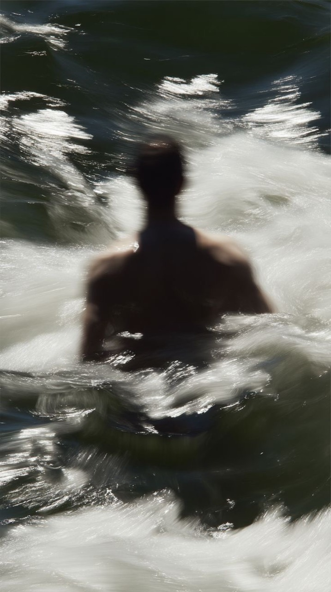

◈
Artificial Intelligence
Exploring intelligent systems, machine learning, and their potential.
I’m Ahmed Al-Aidarous, an Artificial Intelligence student at Arab University. Drawn to deep questions, intelligent systems, and the possibilities waiting beneath the surface.

I’m Ahmed Al-Aidarous, a male university student from Hadramout, Yemen.
At Arab University, I’m studying Artificial Intelligence and exploring how technology can help us understand and shape the world. My academic path began at Tamim ibn Aws School, where I built the foundations for everything I’m learning today.
I’m motivated by big questions, steady progress, and the challenge of turning complex ideas into useful solutions. There is always more to discover.
Skills and strengths I’m developing as I navigate the world of artificial intelligence and digital creation.
Exploring intelligent systems, machine learning, and their potential.
Learning to structure and design experiences for the web.
Breaking complex questions into clear, manageable steps.
Machine learning · Human-centered technology · New perspectives
Ideas and interests that keep my mind moving beyond the classroom.
A record of the places that have shaped my academic journey.
| Stage | Institution | Focus | Status |
|---|---|---|---|
| University | Arab University | Artificial Intelligence | In progress |
| School | Tamim ibn Aws School | School education | Completed |
There is always another horizon.A THOUGHT I CARRY
Interested in artificial intelligence, technology, or an interesting question? Send me a note.
Add your email address here when you’re ready to share it.